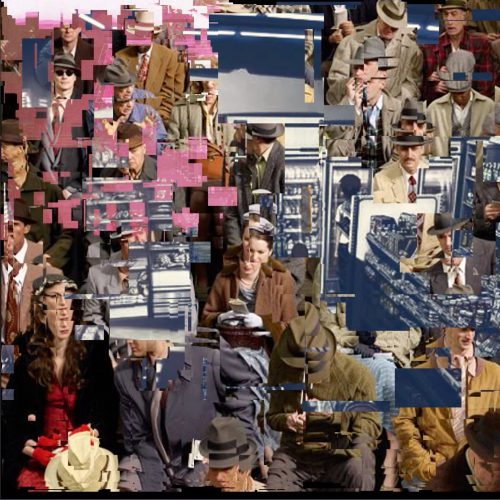
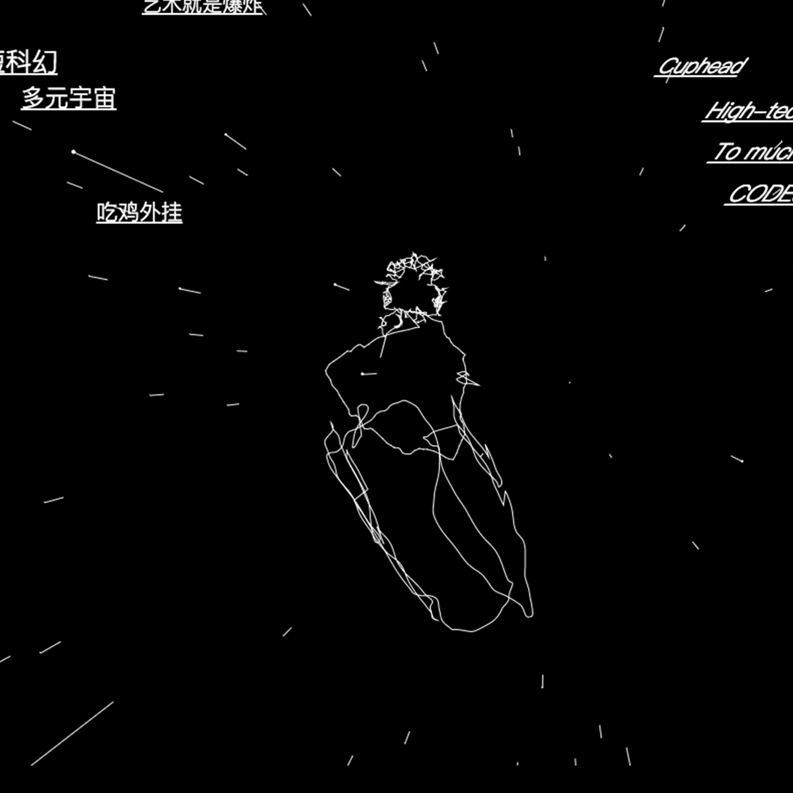
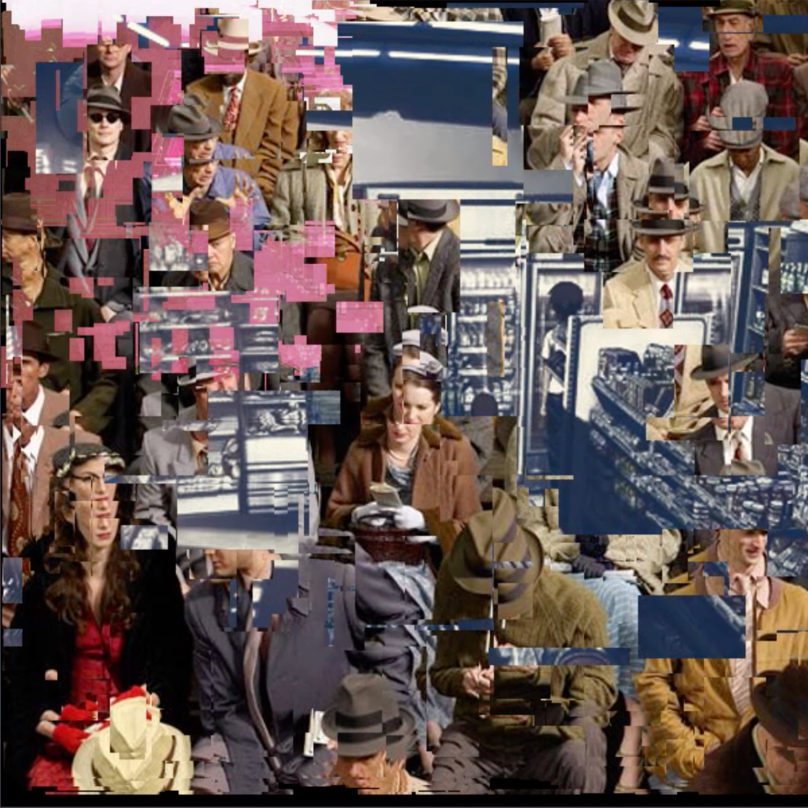
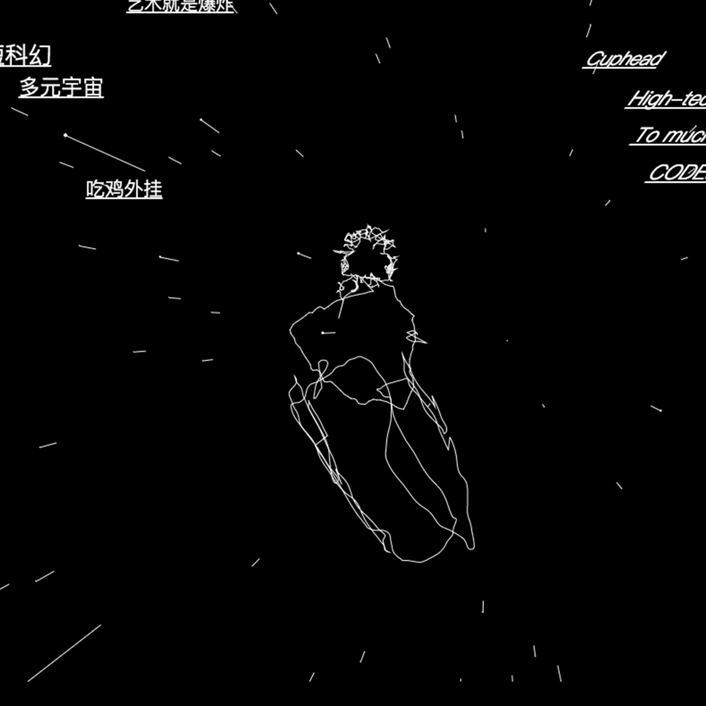

Design fiction is creating a story with visual materials along the texts. It appears that more abstract visual elements are presented in this medium. That means it gives you more freedom of expression, and less effort. (actually not)
Interactive Narrativity
Fiction
Interdimensional, Climate, Hyper Loading, Life of Dots
Conceiving design from technical perspective makes you a better nerd. Despite human computer interaction, digital elements also interact with each other. Exploring various interactions, discovering visual patterns and repeating them with different visual materials; these are methods always lead to visual tools.
Visual Tools
Interaction
At some point you don’t have any specific thoughts, but some feelings or moods are filling your mind. That’s the right moment to express yourself using visual materials.
Visual Exercise
Emotion
Sense of Being, Rise of Tribe,Sketches
While an artist reaching the soul by creating, thou shall allow to play it hard. The design doesn’t have to stick with specific methods or subjects; fiction, emotion and interaction can both take part in the artwork.
Researches
Comprehension
 
